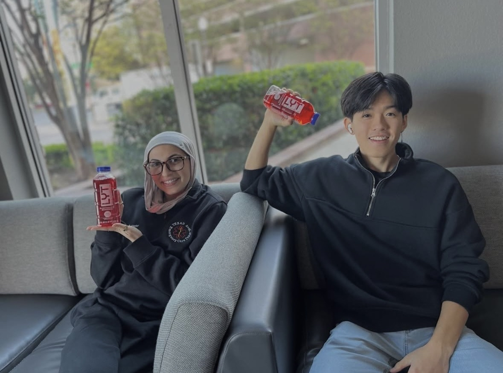
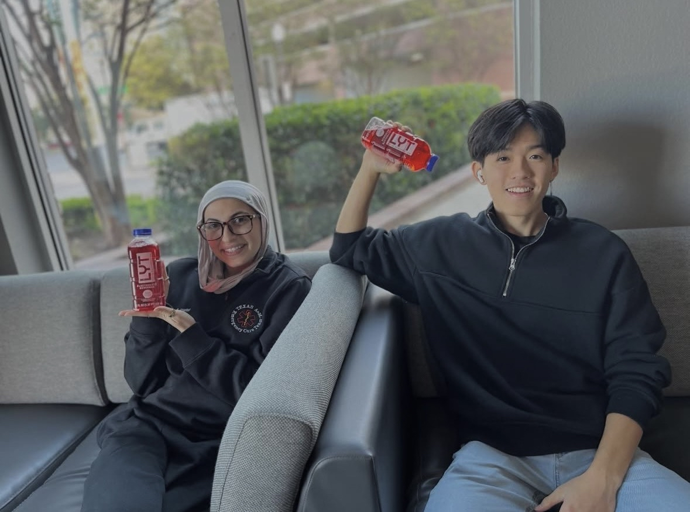
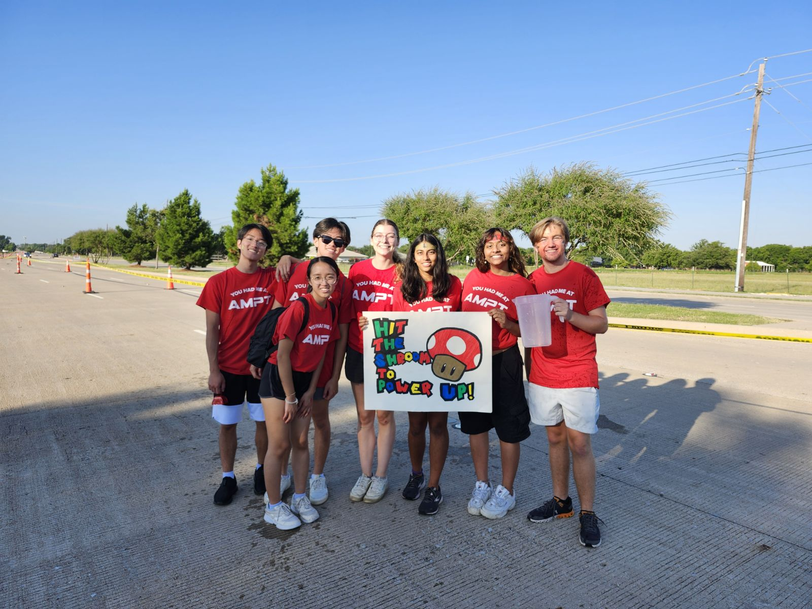
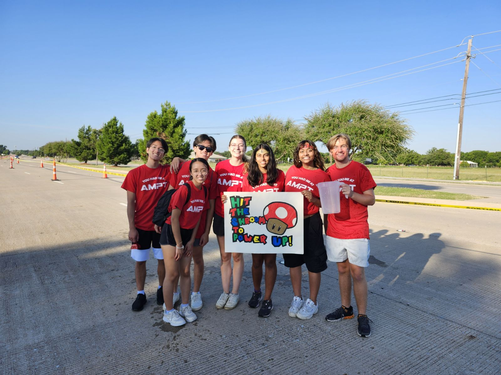

 

Community Service & Leadership
Community Assistant | The Stack at Legacy Point
As a Community Assistant at The Stack at Legacy Point, I serve as a friend, role model, and primary point of leadership for a diverse population of student residents, balancing administrative oversight with interpersonal management. In this role, I plan and facilitate peer mentorship initiatives designed to improve academic and personal growth among residents. Furthermore, I act as the first responder for residential disputes, facility management concerns, and future residential prospects.
My responsibilities extend to overseeing the quality of life within the building, which involves coordinating with my manager, coworkers, and external workers to resolve maintenance issues or other building problems. By creating large-scale community events, I provide a service in making an inclusive and engaging living environment. This demonstrates my ability to manage events and adapt in a changing, high-responsibility setting.
Vice President External | TASA
As the External Vice President of the Taiwanese American Student Association (TASA), I serve as a senior executive leader responsible for driving strategic organizational growth and strengthening community bonds with external organizations, clubs, and companies. My role involves managing high-density operations and events, where I am tasked to oversee internal officers and members, as well as people outwardly involved.
To ensure goal alignments and successful executions of brand sponsors and club partnerships, I have to be able to network and build relationships with potential clubs, brands, and partners. This not only helps to raise awareness and support for the organization, but it allows for more opportunities for our members and other clubs to collaborate and grow together.
All in all, I lead the external management of mixed large-scale events, coordinating everything from venue procurement to budget allocation and even campus-wide initiatives. Beyond the technical responsibilities, I am dedicated to driving cultural awareness programs that promote Taiwanese heritage across the university, while allowing for cross-cultural exchange. Through consistent outreach and mentorship, I have aided in fostering a highly engaged membership and expanded the organization, establishing TASA as a major cultural area on campus.

Event Operations Volunteer | TAMU 10k
As an Event Operations Volunteer for the TAMU 10k, I played a critical role in the setting and execution of a popular local event. By aiding the club organizers with monotonous, overlooked tasks, I was able to create a better experience for over 500 participants.
My responsibilities included the setup of the race route, hydration stations, and the starting and finishing areas. I, along with many others, ensured that all physical infrastructure met safety standards and operational requirements. Although small, I believe my role served as a key part in helping the event organizers, race officials, and racers guarantee efficient race-day operations and maximum runner safety.
By troubleshooting logistical conflicts under pressure and managing high-traffic zones, I helped maintain a seamless experience for both athletes and spectators, contributing to the overall success and community impact of one of TAMU's signature running event.